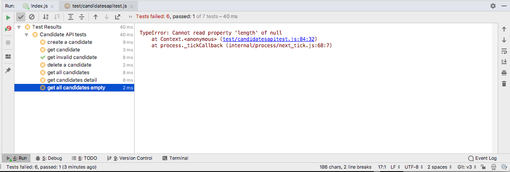
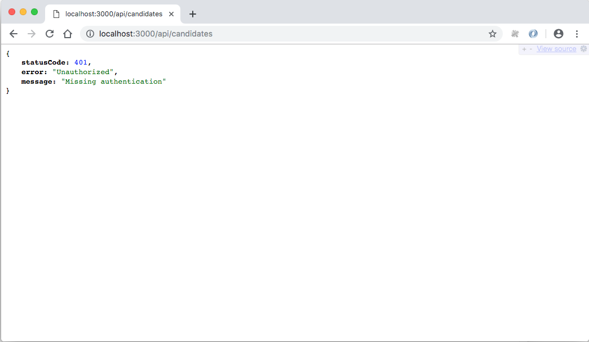

Incorporate JWT security strategy into the application, securing the api routes. Rework the test infrastructure to fully exercises the secure API.
This is a new endpoint in Donation-Web to support deletion of candidates:
{ method: 'DELETE', path: '/api/candidates/{id}/donations', config: Donations.deleteDonations }, deleteDonations: {
auth: false,
handler: async function(request, h) {
await Donation.deleteMany({candidate: request.params.id });
return { success: true };
}
}And then a test, also in donation-web:
test('delete donations', async function () {
const returnedCandidate = await donationService.createCandidate(newCandidate);
for (var i = 0; i < donations.length; i++) {
await donationService.makeDonation(returnedCandidate._id, donations[i]);
}
donationService.deleteDonations(returnedCandidate._id);
const d = await donationService.getDonations(returnedCandidate._id);
console.log(d);
assert.equal(d.length, 0);
});Currently our API is completely open - as we have disabled any authentication strategy on each of these routes:
...
auth: false,
...This is deliberate, as the authentication strategy we have install in the app is unsuitable:
server.auth.strategy('standard', 'cookie', {
password: process.env.cookie_password,
cookie: process.env.cookie_name,
isSecure: false,
ttl: 24 * 60 * 60 * 1000,
redirectTo: '/'
});This strategy utilities the browser cookie facility - is not appropriate for an API (where there may be no browser). We need an alternative strategy to secure the API.
One of the most common approaches is called JSON Web Tokens:
and we will employ a simple version of it now. These are two libraries we will use:
Install both a part of our application:
npm install hapi-auth-jwt2
npm install jsonwebtoken{
"name": "donation-web",
"version": "1.0.0",
"description": "",
"main": "index.js",
"scripts": {
"start": "node index.js",
"test": "echo \"Error: no test specified\" && exit 1"
},
"author": "",
"license": "ISC",
"dependencies": {
"boom": "^7.3.0",
"dotenv": "^6.2.0",
"handlebars": "^4.0.12",
"hapi": "^18.0.0",
"hapi-auth-cookie": "^9.1.0",
"hapi-auth-jwt2": "^8.3.0",
"inert": "^5.1.2",
"joi": "^14.3.1",
"jsonwebtoken": "^8.5.0",
"lodash": "^4.17.11",
"mais-mongoose-seeder": "^1.0.7",
"mongoose": "^5.4.7",
"vision": "^5.4.4"
},
"devDependencies": {
"axios": "^0.18.0",
"chai": "^4.2.0",
"mocha": "^6.0.1",
"prettier": "^1.16.0"
},
"prettier": {
"singleQuote": true,
"printWidth": 120
}
}Our objective is to protect key routes so that they are only accessible to authenticated users. These users must bear a valid token, which serves to validate the user and enable their identity to be confirmed.
Before we create the routes + handlers to support this, we need some utility functions to generate and manipulate the tokens
const jwt = require('jsonwebtoken');
exports.createToken = function (user) {
return jwt.sign({ id: user._id, email: user.email }, 'secretpasswordnotrevealedtoanyone', {
algorithm: 'HS256',
expiresIn: '1h',
});
};
exports.decodeToken = function (token) {
var userInfo = {};
try {
var decoded = jwt.verify(token, 'secretpasswordnotrevealedtoanyone');
userInfo.userId = decoded.id;
userInfo.email = decoded.email;
} catch (e) {
}
return userInfo;
};These use one of the libraries we have installed. The first method generates a token, and the second decodes an existing token, recovering the encrypted fields. In our case, we are basing the token on the User ID + email.
We now need a way to authenticate the users, using email+password which, if correct, will lead us to generate a token.
Here is a new route for this purpose:
{ method: 'POST', path: '/api/users/authenticate', config: Users.authenticate },The implementation:
...
const utils = require('./utils.js');
...
authenticate: {
auth: false,
handler: async function(request, h) {
try {
const user = await User.findOne({ email: request.payload.email });
if (!user) {
return Boom.notFound('Authentication failed. User not found');
}
const token = utils.createToken(user);
return h.response({ success: true, token: token }).code(201);
} catch (err) {
return Boom.notFound('internal db failure');
}
}
},We will test this route in the next step.
This is a skeleton to test the authentication routes:
'use strict';
const assert = require('chai').assert;
const DonationService = require('./donation-service');
const fixtures = require('./fixtures.json');
const utils = require('../app/api/utils.js');
suite('Candidate API tests', function () {
let users = fixtures.users;
let newUser = fixtures.newUser;
const donationService = new DonationService(fixtures.donationService);
setup(async function () {
await donationService.deleteAllUsers();
});
test('authenticate', async function () {
});
});Note that we are including the utils functions from the main application. These will help us validate the token (for test purposes), but they are not exposed as part of the api.
In the test folder, we can extend the DonationService to support authenticate:
async authenticate(user) {
try {
const response = await axios.post('/api/users/authenticate', user);
return response.data;
} catch (e) {
return null;
}
}Here is a first simple test to verify that the route is wired up correctly:
test('authenticate', async function () {
const returnedUser = await donationService.createUser(newUser);
const response = await donationService.authenticate(newUser);
assert(response.success);
assert.isDefined(response.token);
});This should run successfully.
We could go one step further and verify that the token is correctly encoded:
test('verify Token', async function () {
const returnedUser = await donationService.createUser(newUser);
const response = await donationService.authenticate(newUser);
const userInfo = utils.decodeToken(response.token);
assert.equal(userInfo.email, returnedUser.email);
assert.equal(userInfo.userId, returnedUser._id);
});Here we see if the userId and email can be successfully recovered from the token. We will not need to do this on the client, but this test helps firm up our understanding of how the tokens work.
Now that we have established the basic mechanism, we can incorporate jwt auth into the app itself.
We first need a validation function:
...
const User = require('../models/user');
...
exports.validate = async function(decoded, request) {
const user = await User.findOne({ _id: decoded.id });
if (!user) {
return { isValid: false };
} else {
return { isValid: true };
}
};This function is required by the jwt validation strategy we are going to introduce. It will be passed the decoded token and will attempt to validate it. For our purposes, it is valid if it contains and ID for user in our database.
Now we can register the plugin:
...
await server.register(require('hapi-auth-jwt2'));
...Then we define a new strategy, which will be in addition to the strategy already in place:
...
const utils = require('./app/api/utils.js');
...
server.auth.strategy('jwt', 'jwt', {
key: 'secretpasswordnotrevealedtoanyone',
validate: utils.validate,
verifyOptions: { algorithms: ['HS256'] },
});validate is specified here as part of the strategy.
We now mark all of our candidates routes with the jwt strategy, replacing:
auth: false,with
auth: {
strategy: 'jwt',
},We will leave the users api open for the moment.
(Otherwise users could not attempt to authenticate!).
Try running candidates tests now:

As we have guarded the candidates endpoint, all tests fail as our tests do not attempt any authentication (yet).
If you try to access the api from a browser we see similar problems:

All of our api routes are not reporting a missing authentication error:
This is because we are not providing the jwt token upon access. As we have already encapsulate http access in our tests, we can introduce jwt auth into the tests reasonably cleanly.
These is a revised authenticate method:
async authenticate(user) {
try {
const response = await axios.post(this.baseUrl + '/api/users/authenticate', user);
axios.defaults.headers.common['Authorization'] = 'Bearer ' + response.data.token;
return response.data;
} catch (e) {
return null;
}
}In the above, we are setting an Authorization header, containing the token we have just recieved. This will be used on all subsequent requests.
We also introruce a method to clear the token:
async clearAuth(user) {
axios.defaults.headers.common['Authorization'] = '';
}To get the candidateapi test to work, we introuce new suiteSetup and suiteTeardown methods:
suiteSetup(async function() {
await donationService.deleteAllUsers();
const returnedUser = await donationService.createUser(newUser);
const response = await donationService.authenticate(newUser);
});
suiteTeardown(async function() {
await donationService.deleteAllUsers();
donationService.clearAuth();
});in suiteSetup we will delete all users, then create a new user and then authenticate. This token will be retained for all subsequent requests.
In the suiteTeardown we clear the token.
These candidatapitests should work now. This is the comlete test class:
'use strict';
const assert = require('chai').assert;
const DonationService = require('./donation-service');
const fixtures = require('./fixtures.json');
const _ = require('lodash');
suite('Candidate API tests', function() {
let candidates = fixtures.candidates;
let newCandidate = fixtures.newCandidate;
let newUser = fixtures.newUser;
const donationService = new DonationService(fixtures.donationService);
suiteSetup(async function() {
await donationService.deleteAllUsers();
const returnedUser = await donationService.createUser(newUser);
const response = await donationService.authenticate(newUser);
});
suiteTeardown(async function() {
await donationService.deleteAllUsers();
donationService.clearAuth();
});
setup(async function() {
await donationService.deleteAllCandidates();
});
teardown(async function() {
await donationService.deleteAllCandidates();
});
test('create a candidate', async function() {
const returnedCandidate = await donationService.createCandidate(newCandidate);
assert(_.some([returnedCandidate], newCandidate), 'returnedCandidate must be a superset of newCandidate');
assert.isDefined(returnedCandidate._id);
});
test('get candidate', async function() {
const c1 = await donationService.createCandidate(newCandidate);
const c2 = await donationService.getCandidate(c1._id);
assert.deepEqual(c1, c2);
});
test('get invalid candidate', async function() {
const c1 = await donationService.getCandidate('1234');
assert.isNull(c1);
const c2 = await donationService.getCandidate('012345678901234567890123');
assert.isNull(c2);
});
test('delete a candidate', async function() {
let c = await donationService.createCandidate(newCandidate);
assert(c._id != null);
await donationService.deleteOneCandidate(c._id);
c = await donationService.getCandidate(c._id);
assert(c == null);
});
test('get all candidates', async function() {
for (let c of candidates) {
await donationService.createCandidate(c);
}
const allCandidates = await donationService.getCandidates();
assert.equal(allCandidates.length, candidates.length);
});
test('get candidates detail', async function() {
for (let c of candidates) {
await donationService.createCandidate(c);
}
const allCandidates = await donationService.getCandidates();
for (var i = 0; i < candidates.length; i++) {
assert(_.some([allCandidates[i]], candidates[i]), 'returnedCandidate must be a superset of newCandidate');
}
});
test('get all candidates empty', async function() {
const allCandidates = await donationService.getCandidates();
assert.equal(allCandidates.length, 0);
});
});And this is the donation-service.js
'use strict';
const axios = require('axios');
class DonationService {
constructor(baseUrl) {
this.baseUrl = baseUrl;
}
async authenticate(user) {
try {
const response = await axios.post(this.baseUrl + '/api/users/authenticate', user);
axios.defaults.headers.common['Authorization'] = 'Bearer ' + response.data.token;
return response.data;
} catch (e) {
return null;
}
}
async clearAuth(user) {
axios.defaults.headers.common['Authorization'] = '';
}
async getUsers() {
try {
const response = await axios.get(this.baseUrl + '/api/users');
return response.data;
} catch (e) {
return null;
}
}
async getUser(id) {
try {
const response = await axios.get(this.baseUrl + '/api/users/' + id);
return response.data;
} catch (e) {
return null;
}
}
async createUser(newUser) {
try {
const response = await axios.post(this.baseUrl + '/api/users', newUser);
return response.data;
} catch (e) {
return null;
}
}
async deleteAllUsers() {
try {
const response = await axios.delete(this.baseUrl + '/api/users');
return response.data;
} catch (e) {
return null;
}
}
async deleteOneUser(id) {
try {
const response = await axios.delete(this.baseUrl + '/api/users/' + id);
return response.data;
} catch (e) {
return null;
}
}
async getCandidates() {
try {
const response = await axios.get(this.baseUrl + '/api/candidates');
return response.data;
} catch (e) {
return null;
}
}
async getCandidate(id) {
try {
const response = await axios.get(this.baseUrl + '/api/candidates/' + id);
return response.data;
} catch (e) {
return null;
}
}
async createCandidate(newCandidate) {
try {
const response = await axios.post(this.baseUrl + '/api/candidates', newCandidate);
return response.data;
} catch (e) {
return null;
}
}
async deleteAllCandidates() {
try {
const response = await axios.delete(this.baseUrl + '/api/candidates');
return response.data;
} catch (e) {
return null;
}
}
async deleteOneCandidate(id) {
try {
const response = await axios.delete(this.baseUrl + '/api/candidates/' + id);
return response.data;
} catch (e) {
return null;
}
}
async makeDonation(id, donation) {
try {
const repsonse = await axios.post(this.baseUrl + '/api/candidates/' + id + '/donations', donation);
return repsonse.data;
} catch (e) {
return null;
}
}
async getDonations(id) {
try {
const response = await axios.get(this.baseUrl + '/api/candidates/' + id + '/donations');
return response.data;
} catch (e) {
return null;
}
}
async deleteAllDonations() {
try {
const response = await axios.delete(this.baseUrl + '/api/donations');
return response.data;
} catch (e) {
return null;
}
}
async deleteDonations(candidateId) {
try {
const response = await axios.delete(this.baseUrl + '/api/candidates/' + candidateId + '/donations');
return response.data;
} catch (e) {
return null;
}
}
}
module.exports = DonationService;The project so far: